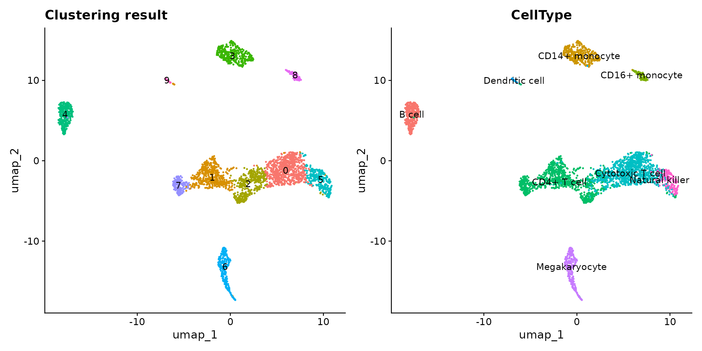
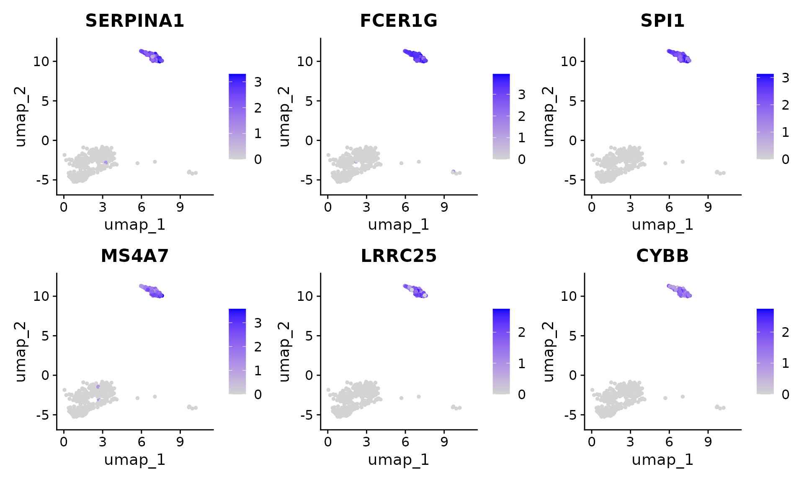
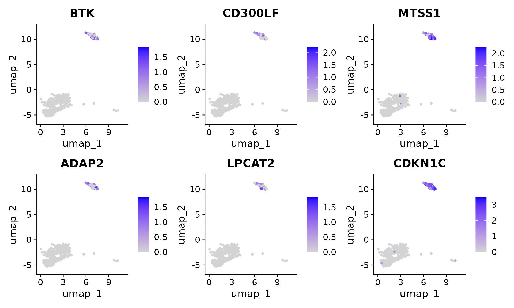
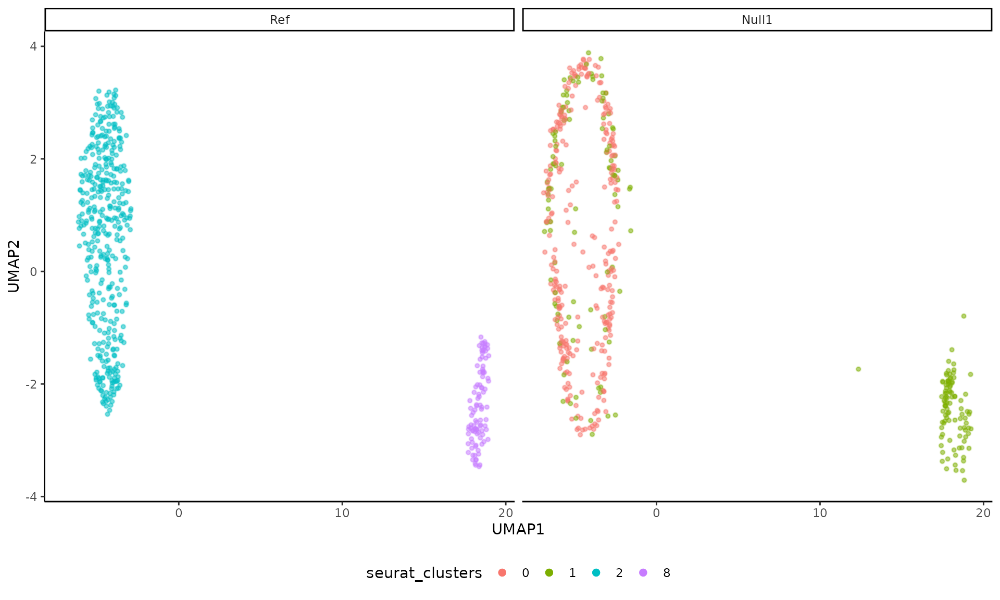
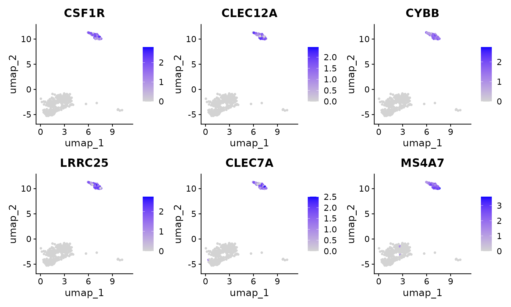
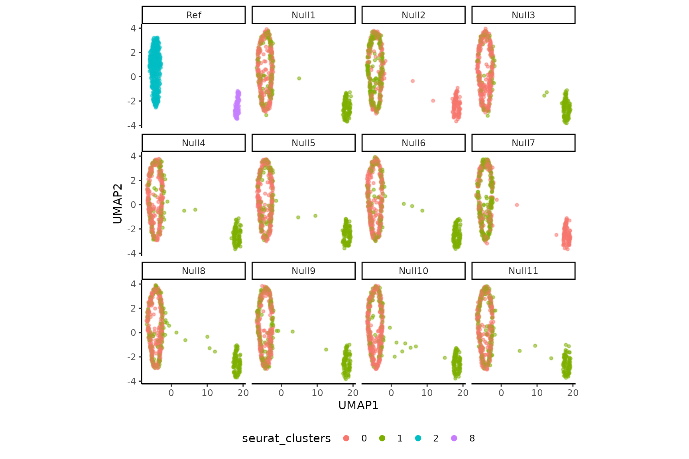

Perform ClusterDE on a PBMC dataset
Dongyuan Song
Department of Genetics & Genome Sciences, UConn HealthBioinformatics IDP, University of California, Los Angelesdongyuansong@ucla.edu
19 August 2026
Source:vignettes/ClusterDE-PBMC.Rmd
ClusterDE-PBMC.RmdDownload data
The PBMC datasets are originally from SeuratData. We use one of them (10x Chromium (v3) from PBMC1 replicate). We filtered out some lowly epxressed genes to save computational time here.
# InstallData("pbmcsca")
# data("pbmcsca")
# pbmc <- pbmcsca[, pbmcsca@meta.data$Method=="10x Chromium (v3)" & pbmcsca@meta.data$Experiment == "pbmc1"]
#
# pbmc <- pbmc[Matrix::rowSums(pbmc@assays$RNA@counts) > 100, ]
# pbmc <- readRDS(url("https://figshare.com/ndownloader/files/41486283"))
data(pbmc, package = "ClusterDE")Run the regular Seurat pipeline
We perform the default Seurat clustering. Note that in real data analysis, the cell type label is usually unknown.
RNGkind("L'Ecuyer-CMRG")
set.seed(123)
pbmc <- Seurat::UpdateSeuratObject(pbmc)
#> Validating object structure
#> Updating object slots
#> Ensuring keys are in the proper structure
#> Warning: Assay RNA changing from Assay to Assay
#> Ensuring keys are in the proper structure
#> Ensuring feature names don't have underscores or pipes
#> Updating slots in RNA
#> Validating object structure for Assay 'RNA'
#> Object representation is consistent with the most current Seurat version
pbmc <- Seurat::NormalizeData(pbmc)
pbmc <- Seurat::FindVariableFeatures(pbmc)
pbmc <- Seurat::ScaleData(pbmc)
#> Centering and scaling data matrix
pbmc <- Seurat::RunPCA(pbmc)
#> PC_ 1
#> Positive: IL32, CCL5, TRBC2, TRAC, CD69, CST7, RORA, CTSW, SPOCK2, ITM2A
#> GZMM, CD247, TRBC1, C12orf75, IL7R, CD8A, CD2, LDHB, GZMA, CD7
#> NKG7, CD6, GZMH, CD8B, BCL11B, PRF1, LYAR, LTB, FGFBP2, TCF7
#> Negative: LYZ, FCN1, CLEC7A, CPVL, SERPINA1, SPI1, S100A9, AIF1, NAMPT, CSTA
#> CTSS, MAFB, MPEG1, NCF2, VCAN, FGL2, S100A8, TYMP, CST3, LST1
#> CYBB, CFD, FCER1G, SLC11A1, TGFBI, GRN, CD14, PSAP, SLC7A7, MS4A6A
#> PC_ 2
#> Positive: RPL10, EEF1A1, TMSB10, RPS2, RPS12, RPL13, RPS18, RPS23, RPLP1, TPT1
#> RPS8, IL32, S100A4, PFN1, RPLP0, NKG7, ARL4C, HSPA8, CST7, ZFP36L2
#> ANXA1, CTSW, S100A6, LDHA, CORO1A, CD247, GZMA, CALR, S100A10, GZMM
#> Negative: NRGN, PF4, SDPR, HIST1H2AC, MAP3K7CL, PPBP, GNG11, GPX1, TUBB1, SPARC
#> CLU, PGRMC1, FTH1, RGS18, MARCH2, TREML1, HIST1H3H, AP003068.23, NCOA4, ACRBP
#> TAGLN2, PRKAR2B, CD9, CA2, CMTM5, CTTN, MTURN, TMSB4X, HIST1H2BJ, TSC22D1
#> PC_ 3
#> Positive: CD79A, HLA-DQA1, MS4A1, LINC00926, IGHM, BANK1, IGHD, TNFRSF13C, HLA-DQB1, CD74
#> IGKC, HLA-DRA, BLK, CD83, CD37, CD22, ADAM28, JUND, NFKBID, HLA-DRB1
#> P2RX5, CD79B, VPREB3, IGLC2, FCER2, RPS8, LTB, RPS23, TCOF1, GNG7
#> Negative: CCL5, TMSB4X, SRGN, NKG7, ACTB, CST7, GZMH, FGFBP2, CTSW, PRF1
#> GZMA, GZMB, C12orf75, S100A4, ANXA1, KLRD1, NRGN, GNLY, GZMM, IL32
#> PF4, SDPR, PPBP, MYO1F, CD247, GAPDH, MAP3K7CL, HIST1H2AC, GNG11, TUBB1
#> PC_ 4
#> Positive: FCGR3A, GZMB, FGFBP2, GZMH, NKG7, HLA-DPA1, PRF1, HLA-DPB1, CST7, GNLY
#> KLRD1, HLA-DRB1, GZMA, CCL5, SPON2, ADGRG1, CTSW, ZEB2, PRSS23, IFITM2
#> CCL4, CD74, KLRF1, RHOC, MTSS1, CDKN1C, CD79B, CEP78, HLA-DQA1, CLIC3
#> Negative: IL7R, LEPROTL1, LTB, RCAN3, MAL, LEF1, TCF7, ZFP36L2, CAMK4, VIM
#> LDHB, NOSIP, JUNB, SLC2A3, TRABD2A, RGCC, SATB1, TNFAIP3, TMEM123, SOCS3
#> AQP3, BCL11B, NELL2, TNFRSF25, CD28, PABPC1, DNAJB1, TRAT1, OXNAD1, TRAC
#> PC_ 5
#> Positive: CDKN1C, HES4, CSF1R, CKB, ZNF703, TCF7L2, CTSL, MS4A7, PAG1, FAM110A
#> SIGLEC10, LRRC25, FCGR3A, LTB, RNASET2, CDH23, IL7R, RRAS, LINC01272, IFITM3
#> LST1, LILRB2, PILRA, RHOC, SLC2A6, PECAM1, CAMK1, TAGLN, IFI30, BID
#> Negative: VCAN, S100A12, S100A8, CD14, CSF3R, ITGAM, CST7, GZMB, MT-CO1, GNLY
#> KLRD1, PRF1, MS4A6A, GZMH, FGFBP2, CD93, EGR1, NKG7, S100A9, MT-CO3
#> IER3, THBS1, RNASE6, CLEC4E, MGST1, CTSW, SGK1, GZMA, RP11-1143G9.4, CH17-373J23.1
pbmc <- Seurat::FindNeighbors(pbmc)
#> Computing nearest neighbor graph
#> Computing SNN
pbmc <- Seurat::FindClusters(pbmc, resolution = 0.3)
#> Modularity Optimizer version 1.3.0 by Ludo Waltman and Nees Jan van Eck
#>
#> Number of nodes: 3222
#> Number of edges: 108633
#>
#> Running Louvain algorithm...
#> Maximum modularity in 10 random starts: 0.9372
#> Number of communities: 10
#> Elapsed time: 0 seconds
pbmc <- Seurat::RunUMAP(pbmc, dims = 1:10)
#> Warning: The default method for RunUMAP has changed from calling Python UMAP via reticulate to the R-native UWOT using the cosine metric
#> To use Python UMAP via reticulate, set umap.method to 'umap-learn' and metric to 'correlation'
#> This message will be shown once per session
#> 01:30:12 UMAP embedding parameters a = 0.9922 b = 1.112
#> 01:30:12 Read 3222 rows and found 10 numeric columns
#> 01:30:12 Using Annoy for neighbor search, n_neighbors = 30
#> 01:30:12 Building Annoy index with metric = cosine, n_trees = 50
#> 0% 10 20 30 40 50 60 70 80 90 100%
#> [----|----|----|----|----|----|----|----|----|----|
#> **************************************************|
#> 01:30:13 Writing NN index file to temp file /loc/scratch/65222922/Rtmp933UyM/file64e9583fcb3d
#> 01:30:13 Searching Annoy index using 1 thread, search_k = 3000
#> 01:30:14 Annoy recall = 100%
#> 01:30:14 Commencing smooth kNN distance calibration using 1 thread with target n_neighbors = 30
#> 01:30:14 Initializing from normalized Laplacian + noise (using RSpectra)
#> 01:30:15 Commencing optimization for 500 epochs, with 126438 positive edges
#> 01:30:18 Optimization finished
p1 <- Seurat::DimPlot(pbmc, reduction = "umap", label = T) +
ggplot2::ggtitle("Clustering result") +
Seurat::NoLegend()
p2 <- Seurat::DimPlot(pbmc, reduction = "umap", group.by = "CellType", label = T) +
Seurat::NoLegend()
p1 + p2
In this vignette, we are interested in cluster 2 vs 8, which approximately represent CD14+/CD16+ monocytes. Please note that ClusterDE is designed for 1 vs 1 comparison. Therefore, users may (1) choose the two interested clusters manually based on their knowledge or (2) use the two locally closest clusters from computation (e.g., BuildClusterTree in Seurat).
library(Seurat)
#> Loading required package: SeuratObject
#> Loading required package: sp
#>
#> Attaching package: 'SeuratObject'
#> The following objects are masked from 'package:base':
#>
#> intersect, t
pbmc <- BuildClusterTree(pbmc)
PlotClusterTree(pbmc)
We perform the DE test between cluster 2 and 8. We subset the cluster 2 and 8 (pbmc_sub).
pbmc_sub <- subset(x = pbmc, idents = c(2, 8))
# Remove genes with zero variance
non_zero_genes <- apply(Seurat::GetAssayData(pbmc_sub, layer = "counts"), 1, var) != 0
pbmc_sub <- pbmc_sub[non_zero_genes,]
original_markers <- Seurat::FindMarkers(
pbmc_sub,
ident.1 = 8,
ident.2 = 2,
min.pct = 0,
logfc.threshold = 0
)
original_markers <- original_markers[original_markers$avg_log2FC > 0,]Find DEGs using ClusterDE
We can use findMarkers() to perform null-calibrated post-clustering differential expression. The result table is sorted by contrast scores.
res <- ClusterDE::findMarkers(pbmc_sub, ident.1 = 8, ident.2 = 2)
#> 36 genes have no more than 2 non-zero values; ignore fitting and return all 0s.
#> 55.3% of genes are used in correlation modelling.
#> 0/1: Modularity Optimizer version 1.3.0 by Ludo Waltman and Nees Jan van Eck
#> 0/1:
#> 0/1: Number of nodes: 510
#> 0/1: Number of edges: 21156
#> 0/1:
#> 0/1: Running Louvain algorithm...
#> 0/1: Maximum modularity in 10 random starts: 0.7884
#> 0/1: Number of communities: 3
#> 0/1: Elapsed time: 0 seconds
#> 0/1: Modularity Optimizer version 1.3.0 by Ludo Waltman and Nees Jan van Eck
#> 0/1:
#> 0/1: Number of nodes: 510
#> 0/1: Number of edges: 21156
#> 0/1:
#> 0/1: Running Louvain algorithm...
#> 0/1: Maximum modularity in 10 random starts: 0.8671
#> 0/1: Number of communities: 2
#> 0/1: Elapsed time: 0 seconds
#> 0/1: Normalizing layer: counts
#> 0/1: Finding variable features for layer counts
#> 0/1: Centering and scaling data matrix
#> 0/1: PC_ 1
#> Positive: IL32, CCL5, NKG7, ZFP36L2, DUSP2, CTSW, CD69, TRBC2, JUN, GZMA
#> TNFAIP3, IL7R, EEF1A1, GZMK, RORA, SYNE2, CD8A, AC092580.4, TRAC, CD7
#> KLRD1, KLRB1, MALAT1, PRF1, TRBC1, TRGC2, NR4A2, MYBL1, CREM, CD2
#> Negative: SPI1, FCER1G, AIF1, CST3, SERPINA1, CYBB, CFD, MS4A7, CD68, FCGR3A
#> TYROBP, LMO2, LYN, LRRC25, PECAM1, FGR, WARS, HCK, LILRB2, LST1
#> CSF1R, IFITM3, LYZ, MAFB, RXRA, SH3BP2, CLEC12A, NPC2, HES4, MARCKS
#> PC_ 2
#> Positive: TMSB10, ACTB, TMSB4X, PFN1, SH3BGRL3, MYL6, H3F3A, S100A4, YBX1, ARPC2
#> ACTG1, SRGN, PABPC1, ARPC3, FTL, TPM3, RHOA, ITGB2, S100A6, OAZ1
#> LCP1, CDC42, NEAT1, PTP4A2, FTH1, ALDOA, LY6E, ARPC1B, RPS19, EMP3
#> Negative: FCER1G, AIF1, SERPINA1, SPI1, LILRB2, CSF1R, MS4A7, LMO2, CST3, PILRA
#> MAFB, CLEC12A, CFD, CD68, LRRC25, HCK, FCGR2A, FCGR3A, SLC7A7, CYBB
#> HMOX1, SLC11A1, CPVL, POU2F2, PECAM1, IFI30, CPPED1, MARCKS, CDKN1C, CLEC7A
#> PC_ 3
#> Positive: MALAT1, GZMH, CCL5, CD8B, FYB, TXNIP, FGFBP2, TMSB10, CD2, HLA-DRB1
#> NKG7, TMSB4X, HLA-DPA1, STAT1, KLRD1, DYRK2, CMC1, SETD4, ITGB2, HLA-DPB1
#> NHLRC3, ATP9B, FAM89B, TRPS1, CEPT1, YBX3, ARPC2, ZFYVE16, TRBC1, ZNF106
#> Negative: KLRB1, LTB, NFKBIA, FOS, TNFAIP3, NCR3, DUSP1, IL7R, AQP3, TOB1
#> FTH1, BHLHE40, CD69, EEF1A1, SRGN, IER5, RORA, CEBPD, FURIN, PDE4D
#> TLE1, S100A6, GTF3C1, RCAN3, GRASP, TNFRSF25, ZFP36L2, S100A4, PABPC1, SLC7A5
#> PC_ 4
#> Positive: MT-ND3, HHEX, MTSS1, MT-CO3, MT-ATP6, MT-CO2, TNFSF10, MT-ND2, RGS2, MT-CO1
#> CKB, GIMAP4, FCGR2A, CHST2, RP5-1171I10.5, ANXA4, CDKN1C, TKT, RNF144B, FBXL3
#> ZFYVE16, RRBP1, CEBPD, FAM110A, GPR155, CACUL1, CTBS, BEST1, LEMD2, GLUL
#> Negative: CD63, NDUFS6, HLA-DRA, HLA-DRB1, FCN1, ANKDD1A, TRAF5, FGL2, TPP1, HLA-DPB1
#> IFI35, TNFAIP2, MARCKS, SAMHD1, CD7, GRN, DUSP6, PLAC8, IL10RB, MINOS1
#> CARD19, IFI44, C20orf27, MYD88, DNAJB2, GNAQ, CD8B, AOAH, PGD, CD74
#> PC_ 5
#> Positive: LFNG, PHF19, EVI5, MANBA, SYNE3, HES4, KIF1B, LILRA1, SCPEP1, RYBP
#> RNF141, GNB4, LGALS9, SART3, RP2, ATG16L2, AGPAT2, CDKN2D, SLC6A6, RAB11FIP4
#> ACOT9, SKAP2, HSF1, APOBEC3A, ACTN4, SPOPL, WDR1, KMT5B, ARRDC3, MARCH1
#> Negative: TM9SF4, UPP1, SCLT1, KLHL5, DICER1, VPS35, TLE3, MAP3K11, LACTB, SLC12A9
#> CXCL16, BCL11B, NDUFB3, LIMS1, GLUL, CCT5, RPS19, IL17RA, UBE2R2, OMA1
#> HDAC5, ZNF106, ATP6AP1, C5AR2, PDCD6IP, FAM32A, SIDT2, CDC42EP3, RAD23B, RPS27L
#> 0/1: Computing nearest neighbor graph
#> 0/1: Computing SNN
head(res)
#> # A tibble: 6 × 3
#> gene cs record
#> <chr> <dbl> <dbl>
#> 1 BTK 51.0 1
#> 2 CD300LF 50.9 1
#> 3 MTSS1 50.7 1
#> 4 ADAP2 48.1 1
#> 5 LPCAT2 47.9 1
#> 6 CDKN1C 47.9 1To compare the result from the naive Seurat pipeline and ClusterDE, we first visualize the top 6 DE genes from Seurat. Genes LST1 and RPS19 are both highly expressed in two clusters. In addition, RPS19 is reported as a stable housekeeping genes in several studies. Note that it does not mean the expression levels of LST1 and RPS19 are the same between the two cell types. It means that they are not good cell type markers. Philosophically speaking, it means that conditional on the two clusters are obtained by clustering algorithm, LST1 and RPS19 are less likely to be the cell type markers between the two cell types.
Seurat::FeaturePlot(pbmc[, pbmc$seurat_clusters %in% c(2, 8)], features = rownames(original_markers)[1:6], ncol = 3)
In contrast, the genes from ClusterDE do not have LST1 and RPS19 anymore.
Seurat::FeaturePlot(pbmc[, pbmc$seurat_clusters %in% c(2, 8)], features = res$gene[1:6], ncol = 3)
Customize null data generation
Here we show how ClusterDE generates and calculates the synthetic null data p-values. The synthetic null data is first generated based on the target data (real subset data, pbmc_sub, which contains the two clusters you are interested in). You can increase the number of cores (CPUs) to speed it up.
null_data <- ClusterDE::constructNull(pbmc_sub, nCores = 1)
#> 36 genes have no more than 2 non-zero values; ignore fitting and return all 0s.
#> 55.3% of genes are used in correlation modelling.Next we perform the same preprocess pipeline for the null data as the target data, which is wrapped in calcNullPval(). This uses Louvain clustering in Seurat to adjust resolution until two clusters are found.
null_pval <- ClusterDE::calcNullPval(null_data)
#> 0/1: Modularity Optimizer version 1.3.0 by Ludo Waltman and Nees Jan van Eck
#> 0/1:
#> 0/1: Number of nodes: 510
#> 0/1: Number of edges: 20983
#> 0/1:
#> 0/1: Running Louvain algorithm...
#> 0/1: Maximum modularity in 10 random starts: 0.7963
#> 0/1: Number of communities: 3
#> 0/1: Elapsed time: 0 seconds
#> 0/1: Modularity Optimizer version 1.3.0 by Ludo Waltman and Nees Jan van Eck
#> 0/1:
#> 0/1: Number of nodes: 510
#> 0/1: Number of edges: 20983
#> 0/1:
#> 0/1: Running Louvain algorithm...
#> 0/1: Maximum modularity in 10 random starts: 0.8761
#> 0/1: Number of communities: 2
#> 0/1: Elapsed time: 0 seconds
#> 0/1: Normalizing layer: counts
#> 0/1: Finding variable features for layer counts
#> 0/1: Centering and scaling data matrix
#> 0/1: PC_ 1
#> Positive: CCL5, IL32, NKG7, DUSP2, ZFP36L2, JUN, CD69, SPOCK2, IL7R, TRBC2
#> GZMK, TNFAIP3, TRAC, RORA, MALAT1, TRBC1, CD8A, CD7, PRF1, AC092580.4
#> HOPX, CREM, TRGC2, KLRB1, GNLY, CD2, KLRD1, SYTL2, CD8B, AQP3
#> Negative: AIF1, SPI1, SERPINA1, FCER1G, FCGR3A, CD68, CST3, PECAM1, WARS, TYROBP
#> CSF1R, IFITM3, CFD, MS4A7, CYBB, LRRC25, LYN, LYZ, LMO2, FGR
#> LILRB2, LST1, TYMP, VASP, MAFB, HES4, HCK, MARCKS, CLEC7A, IFI30
#> PC_ 2
#> Positive: TMSB10, ACTB, PFN1, ARPC2, CFL1, H3F3A, TMSB4X, S100A6, LCP1, RPS19
#> S100A4, FTL, CYBA, TPM3, ACTG1, MT-ND2, VIM, ARPC3, EMP3, NEAT1
#> GNAI2, DUSP1, CORO1A, ALDOA, CD74, MT-CO1, OAZ1, MT-CO2, SH3BGRL, PTP4A2
#> Negative: SERPINA1, MARCKS, SPI1, FCER1G, MAFB, CD68, HMOX1, AIF1, CYBB, C5AR1
#> CST3, CSF1R, CDKN1C, LILRB2, HCK, MS4A7, CLEC12A, CFD, CLEC7A, IFNGR2
#> CPVL, HES4, FGL2, LRRC25, CSTA, LMO2, GZMK, SLC7A7, LYZ, IFI30
#> PC_ 3
#> Positive: MALAT1, S1PR4, MTSS1, CKB, TRAC, FAM110A, GZMH, MS4A7, GPR155, TMSB4X
#> PELI1, CDKN1C, TESC, CD8B, CD2, EPN1, CACUL1, CMC1, CHST2, LYST
#> FGFBP2, CCL5, MANBA, KMT5B, SNX20, CD160, FYB, TALDO1, ARRB1, TXNIP
#> Negative: KLRB1, FOS, LGALS3, VAMP8, AQP3, NFKBIA, DUSP1, NCR3, LTB, BHLHE40
#> GRN, CH17-373J23.1, SNHG15, TNFRSF25, TNFAIP3, IFI44L, TRGC1, TLE3, DDIT4, ZNF385A
#> CD69, EPSTI1, TPP1, CD63, PLSCR1, GRASP, LARP1, ISG15, LIPA, ZBTB16
#> PC_ 4
#> Positive: KLRB1, LTB, NFKBIA, NCR3, RPS19, FTH1, AQP3, CEBPD, TNFAIP3, PDE4D
#> FOS, FURIN, IRS2, S100A4, RORA, ZFP36L1, S100A6, IER5, RGS2, TOB1
#> CHST2, TNFRSF25, DUSP1, ZBTB16, LST1, S1PR4, NOSIP, SLC7A5, DBNL, TLE1
#> Negative: MALAT1, EPSTI1, CCL5, CD8B, TXNIP, HLA-DPB1, HLA-DRB1, GZMH, HLA-DPA1, VCL
#> GRN, FGFBP2, CXCR3, CD2, TMSB10, TUBA4A, RREB1, TMSB4X, HLA-DMA, SRGAP2
#> NSMF, ISG15, HLA-DQB1, NKG7, IFNAR2, LIPA, OASL, MKLN1, STX7, CECR1
#> PC_ 5
#> Positive: LTB, IFIT3, CXCL16, NOSIP, CD300A, ARHGAP27, GRIPAP1, WAS, HLA-DMA, CAT
#> SOD2, COA1, RNF141, IRF8, NCOA4, STX7, OGDH, PDLIM5, GRASP, IFI35
#> MPP1, FAM110A, ATP6AP1, MCTS1, PILRA, PRF1, GNG5, ARRB1, ZNF621, FAM26F
#> Negative: SYNE3, TTYH3, MT-CO2, MT-CO3, AOAH, CHP1, GLYR1, PIK3CG, FCN1, TPMT
#> KIAA2013, KIAA0232, PLEKHB2, PLXNC1, UROS, FLOT2, LAMTOR3, MAP4K4, SAMD8, MEF2A
#> PHF19, S100A9, HADHB, RAB11FIP1, DCP2, UBE2J1, P2RY11, MAP3K11, TESPA1, ARHGAP17
#> 0/1: Computing nearest neighbor graph
#> 0/1: Computing SNNYou can use dimPlot() to compare the reference (real) dataset and the synthetic null datasets generated by ClusterDE.
ClusterDE::dimPlot(pbmc_sub, null_pval$data)
#> Registered S3 method overwritten by 'scDesign3':
#> method from
#> predict.gamlss gamlss
#> Found more than one class "dist" in cache; using the first, from namespace 'spam'
#> Also defined by 'BiocGenerics'
#> Found more than one class "dist" in cache; using the first, from namespace 'spam'
#> Also defined by 'BiocGenerics'
We extract the p-values from both original data and synthetic null data, then use ClusterDE to “compare” them.
original_pval <- original_markers$p_val
names(original_pval) <- rownames(original_markers)
res <- ClusterDE::callDE(original_pval, null_pval$p)The result table is the list of DEGs ranked by contrast scores, which is also used as the output of findMarkers().
head(res)
#> # A tibble: 6 × 3
#> gene cs record
#> <chr> <dbl> <dbl>
#> 1 HMOX1 65.7 1
#> 2 LILRB2 65.6 1
#> 3 CLEC12A 65.4 1
#> 4 CYBB 64.6 1
#> 5 MARCKS 64.0 1
#> 6 SERPINA1 63.2 1PCA approximation for faster null data generation
For a more robust DEG detection, ClusterDE allows generating multiple null data replicates. By increasing number of nRep in findMarkers(), you can create several synthetic null datasets and compare all of them against the original DE markers. When generating many null data replicates (nRep) for DEG analysis, null data simulation can become time-consuming. ClusterDE provides a PCA-based approximation to speed up this process. By setting flavour to “pca” and increasing number of threads (nCores) in findMarkers(), the null datasets are generated faster while still preserving robustness.
res <- ClusterDE::findMarkers(
pbmc_sub,
ident.1 = 8,
ident.2 = 2,
flavour = "pca",
nRep = 40,
nCores = 8
)The record column counts the frequency with which each gene is identified as a DEG across null data replicates.
- A higher
recordvalue indicates that the gene is consistently called differentially expressed across multiple simulated null datasets. - This metric helps assess the stability and reproducibility of DE calls.
head(res)
#> # A tibble: 6 × 3
#> gene cs record
#> <chr> <dbl> <dbl>
#> 1 CSF1R 43.9 0.2
#> 2 CLEC12A 40.6 0.275
#> 3 CYBB 40.5 0.1
#> 4 LRRC25 40.2 0.225
#> 5 CLEC7A 40.1 0.2
#> 6 MS4A7 39.8 0.325We can also visualize the genes found by ClusterDE with multiple replicates and PCA approximation.
Seurat::FeaturePlot(pbmc[, pbmc$seurat_clusters %in% c(2, 8)], features = res$gene[1:6], ncol = 3)
To explicitly construct null data using PCA approximation, you can specify usePca = T and adjust number of PCs by changing nPcs in constructNull().
null_data <- ClusterDE::constructNull(pbmc_sub, usePca = T, nCores = 8, nRep = 40, nPcs = 200)
#> Contruct PCA
#> Construct scDesign3 data
#> Fit marginal
#> Fit copula
#> Generate null data of 40 replicatesThe returned null_data will contain a list of all replicates. Then we can use calcNullPval() to preprocess and calculate gene p-values for each replicate. Note that if PCA approximation is used, the simulated null data is not a true count matrix, so normalization should be skipped, and highly variable genes should be provided from real reference data.
null_pval <- ClusterDE::calcNullPval(null_data, normalize = F, hvg = Seurat::VariableFeatures(pbmc_sub), nCores = 8)Here we show part of the simulated null replicates in the same UMAP space as real data.
ClusterDE::dimPlot(pbmc_sub, null_pval$data[1:11])
#> Found more than one class "dist" in cache; using the first, from namespace 'spam'
#> Also defined by 'BiocGenerics'
#> Found more than one class "dist" in cache; using the first, from namespace 'spam'
#> Also defined by 'BiocGenerics'
#> Found more than one class "dist" in cache; using the first, from namespace 'spam'
#> Also defined by 'BiocGenerics'
#> Found more than one class "dist" in cache; using the first, from namespace 'spam'
#> Also defined by 'BiocGenerics'
#> Found more than one class "dist" in cache; using the first, from namespace 'spam'
#> Also defined by 'BiocGenerics'
#> Found more than one class "dist" in cache; using the first, from namespace 'spam'
#> Also defined by 'BiocGenerics'
#> Found more than one class "dist" in cache; using the first, from namespace 'spam'
#> Also defined by 'BiocGenerics'
#> Found more than one class "dist" in cache; using the first, from namespace 'spam'
#> Also defined by 'BiocGenerics'
#> Found more than one class "dist" in cache; using the first, from namespace 'spam'
#> Also defined by 'BiocGenerics'
#> Found more than one class "dist" in cache; using the first, from namespace 'spam'
#> Also defined by 'BiocGenerics'
#> Found more than one class "dist" in cache; using the first, from namespace 'spam'
#> Also defined by 'BiocGenerics'
#> Found more than one class "dist" in cache; using the first, from namespace 'spam'
#> Also defined by 'BiocGenerics'
Session information
sessionInfo()
#> R version 4.4.0 (2024-04-24)
#> Platform: x86_64-pc-linux-gnu
#> Running under: Ubuntu 18.04.6 LTS
#>
#> Matrix products: default
#> BLAS/LAPACK: FlexiBLAS OPENBLAS; LAPACK version 3.11.0
#>
#> Random number generation:
#> RNG: L'Ecuyer-CMRG
#> Normal: Inversion
#> Sample: Rejection
#>
#> locale:
#> [1] LC_CTYPE=en_US.UTF-8 LC_NUMERIC=C
#> [3] LC_TIME=en_US.UTF-8 LC_COLLATE=en_US.UTF-8
#> [5] LC_MONETARY=en_US.UTF-8 LC_MESSAGES=en_US.UTF-8
#> [7] LC_PAPER=en_US.UTF-8 LC_NAME=C
#> [9] LC_ADDRESS=C LC_TELEPHONE=C
#> [11] LC_MEASUREMENT=en_US.UTF-8 LC_IDENTIFICATION=C
#>
#> time zone: America/Los_Angeles
#> tzcode source: system (glibc)
#>
#> attached base packages:
#> [1] stats graphics grDevices utils datasets methods base
#>
#> other attached packages:
#> [1] Seurat_5.1.0 SeuratObject_5.0.2 sp_2.1-4 BiocStyle_2.32.0
#>
#> loaded via a namespace (and not attached):
#> [1] RcppAnnoy_0.0.22 splines_4.4.0
#> [3] later_1.3.2 tibble_3.2.1
#> [5] polyclip_1.10-6 gamlss.data_6.0-7
#> [7] fastDummies_1.7.3 lifecycle_1.0.4
#> [9] globals_0.16.3 lattice_0.22-6
#> [11] MASS_7.3-60.2 backports_1.4.1
#> [13] magrittr_2.0.3 limma_3.60.6
#> [15] plotly_4.10.4 sass_0.4.9
#> [17] rmarkdown_2.30 jquerylib_0.1.4
#> [19] yaml_2.3.12 httpuv_1.6.15
#> [21] sctransform_0.4.1 askpass_1.2.0
#> [23] spam_2.10-0 spatstat.sparse_3.0-3
#> [25] reticulate_1.46.0 cowplot_1.1.3
#> [27] pbapply_1.7-2 RColorBrewer_1.1-3
#> [29] zlibbioc_1.50.0 abind_1.4-5
#> [31] Rtsne_0.17 GenomicRanges_1.56.0
#> [33] purrr_1.0.2 presto_1.0.0
#> [35] BiocGenerics_0.50.0 kde1d_1.1.1
#> [37] GenomeInfoDbData_1.2.12 IRanges_2.38.0
#> [39] S4Vectors_0.42.0 ggrepel_0.9.5
#> [41] irlba_2.3.5.1 listenv_0.9.1
#> [43] spatstat.utils_3.0-4 umap_0.2.10.0
#> [45] goftest_1.2-3 RSpectra_0.16-1
#> [47] spatstat.random_3.2-3 fitdistrplus_1.2-1
#> [49] parallelly_1.37.1 pkgdown_2.0.9
#> [51] DelayedArray_0.30.1 leiden_0.4.3.1
#> [53] codetools_0.2-20 tidyselect_1.2.1
#> [55] UCSC.utils_1.0.0 farver_2.1.2
#> [57] randtoolbox_2.0.5 matrixStats_1.3.0
#> [59] stats4_4.4.0 spatstat.explore_3.2-7
#> [61] jsonlite_1.8.8 progressr_0.14.0
#> [63] ggridges_0.5.6 survival_3.6-4
#> [65] systemfonts_1.1.0 bettermc_1.2.2.9000
#> [67] tools_4.4.0 ragg_1.3.1
#> [69] ica_1.0-3 Rcpp_1.0.12
#> [71] glue_1.7.0 SparseArray_1.4.3
#> [73] gridExtra_2.3 xfun_0.56
#> [75] mvnfast_0.2.8 MatrixGenerics_1.16.0
#> [77] scDesign3_1.7.6 GenomeInfoDb_1.40.0
#> [79] dplyr_1.1.4 withr_3.0.0
#> [81] BiocManager_1.30.27 fastmap_1.2.0
#> [83] fansi_1.0.6 openssl_2.1.2
#> [85] digest_0.6.35 gamlss_5.5-0
#> [87] R6_2.5.1 mime_0.12
#> [89] textshaping_0.3.7 colorspace_2.1-0
#> [91] scattermore_1.2 tensor_1.5
#> [93] spatstat.data_3.0-4 utf8_1.2.4
#> [95] tidyr_1.3.1 generics_0.1.3
#> [97] data.table_1.15.4 S4Arrays_1.4.0
#> [99] httr_1.4.7 htmlwidgets_1.6.4
#> [101] rngWELL_0.10-10 uwot_0.2.2
#> [103] pkgconfig_2.0.3 gtable_0.3.5
#> [105] lmtest_0.9-40 SingleCellExperiment_1.26.0
#> [107] XVector_0.44.0 htmltools_0.5.8.1
#> [109] dotCall64_1.1-1 bookdown_0.39
#> [111] Biobase_2.64.0 scales_1.3.0
#> [113] png_0.1-8 knitr_1.51
#> [115] reshape2_1.4.4 checkmate_2.3.1
#> [117] nlme_3.1-164 cachem_1.0.8
#> [119] zoo_1.8-12 stringr_1.5.1
#> [121] KernSmooth_2.23-22 parallel_4.4.0
#> [123] miniUI_0.1.1.1 desc_1.4.3
#> [125] pillar_1.9.0 grid_4.4.0
#> [127] vctrs_0.6.5 RANN_2.6.1
#> [129] promises_1.3.0 xtable_1.8-4
#> [131] cluster_2.1.6 gamlss.dist_6.1-1
#> [133] evaluate_0.23 cli_3.6.2
#> [135] compiler_4.4.0 crayon_1.5.2
#> [137] rlang_1.1.3 future.apply_1.11.2
#> [139] labeling_0.4.3 mclust_6.1.1
#> [141] plyr_1.8.9 fs_1.6.4
#> [143] stringi_1.8.4 viridisLite_0.4.2
#> [145] deldir_2.0-4 assertthat_0.2.1
#> [147] rvinecopulib_0.7.3.1.0 munsell_0.5.1
#> [149] lazyeval_0.2.2 coop_0.6-3
#> [151] spatstat.geom_3.2-9 Matrix_1.7-0
#> [153] RcppHNSW_0.6.0 patchwork_1.2.0
#> [155] future_1.33.2 ggplot2_3.5.1
#> [157] statmod_1.5.0 shiny_1.8.1.1
#> [159] SummarizedExperiment_1.34.0 ROCR_1.0-11
#> [161] igraph_2.0.3 memoise_2.0.1
#> [163] ClusterDE_0.99.4 bslib_0.7.0
#> [165] ape_5.8